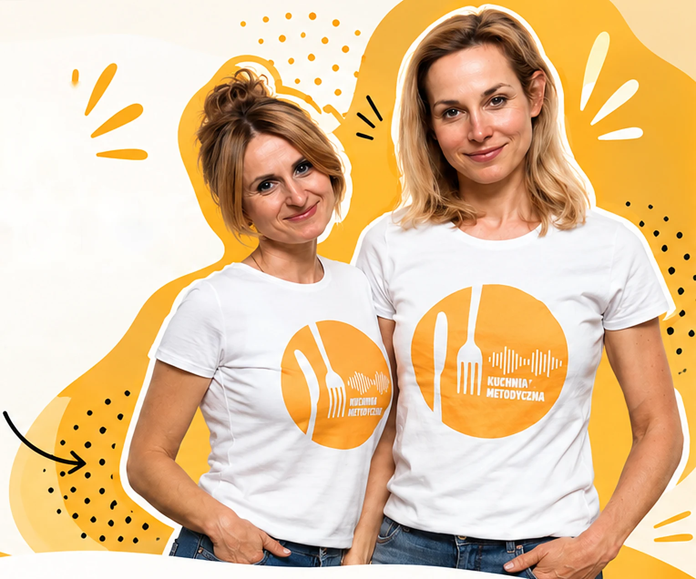
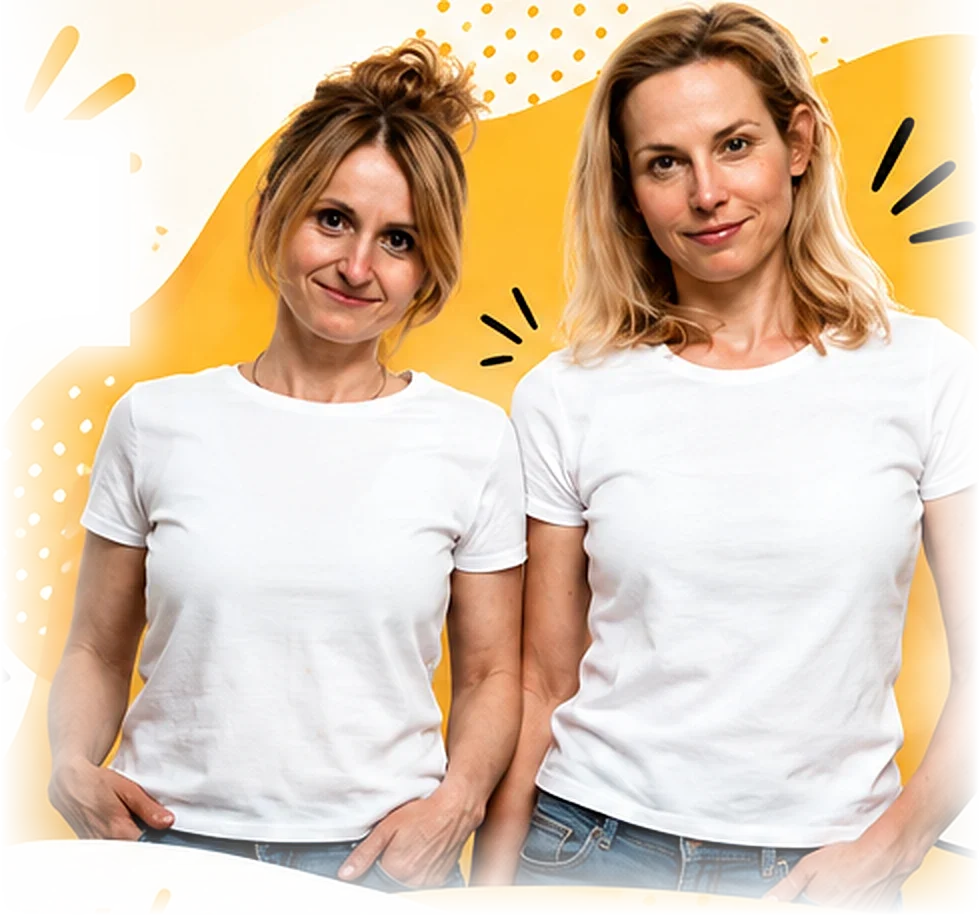

17
Makaron z truskawkami, czyli co oczywiste nie wszędzie jest oczywiste
Jak odnaleźć się w klasie pełnej różnorodności kulturowej i reagować na odmienne standardy zachowania z wyrozumiałością.
Tu łączymy doświadczenie, wiedzę i praktykę, żeby tworzyć lepsze lekcje językowe.
SŁUCHAJ PODCASTU
Inspirujące rozmowy
o nauczaniu języków.
Dwie nauczycielki,
jedna wspólna pasja.
Praktyczna wiedza
dla nauczycieli.
Jak odnaleźć się w klasie pełnej różnorodności kulturowej i reagować na odmienne standardy zachowania z wyrozumiałością.
Bez PR-u i marketingu rozbrajamy kompetencje 4K i przenosimy je z teorii raportów prosto do sali lekcyjnej.
Czy Twoje prezentacje to lekka przystawka, czy ciężkostrawny bufet? Rozkładamy wystąpienia publiczne na składniki.
Dlaczego jedne rzeczy zostają z nami na długo, a inne znikają po kilku minutach? Co wspiera zapamiętywanie, a co je sabotuje?
Wyruszamy w podróż po języku i kulturze francuskiej. Przewodniczką jest Dominika Wierzbowicz.
Prowadzimy autorskie szkolenia i warsztaty dla nauczycieli języków obcych – online i stacjonarnie, w całej Polsce. Dopasowujemy temat i formę do potrzeb Twojego zespołu.
Szkolenia od 1200 zł · cenę dopasowujemy do formy i wielkości grupy

Raz w miesiącu krótka wiadomość o nowym odcinku podcastu. Bez spamu.